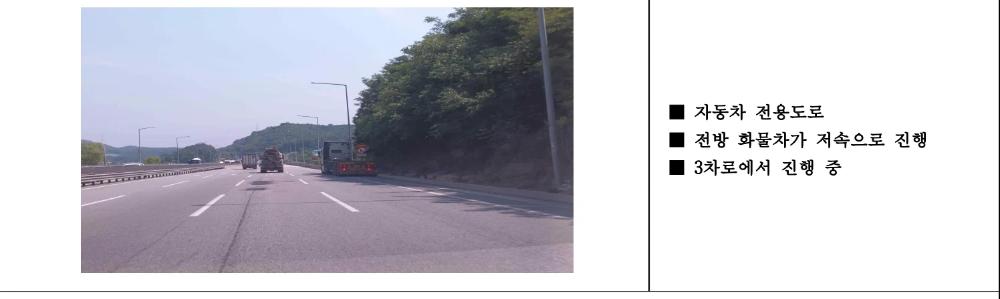

738. Which of the following are the safest ways to drive in the given situation? (Select TWO)

- ①To overtake the truck ahead, use the high-beam headlights or honk continuously to make it yield.
- ②Use the fourth lane to overtake quickly.
- ③Drive as closely as possible to the truck ahead before overtaking.
- ④Turn on the left-turn signal in advance, maintain a safe distance, and use the second lane to overtake.
- ⑤When changing lanes, watch out for vehicles in the left lane and avoid forcing an overtaking maneuver.
Show answer
Answer
④ Turn on the left-turn signal in advance, maintain a safe distance, and use the second lane to overtake.
⑤ When changing lanes, watch out for vehicles in the left lane and avoid forcing an overtaking maneuver.
Reference
To pass another car, you must pass on the left side of the car in front. At this time, you must turn on the turn signal in advance and secure a safe distance before attempting to pass. When changing the course of a car, you must not change the course if there is a risk of interfering with the normal passage of other cars coming in the direction you want to change.
Reference text is a machine translation for study.